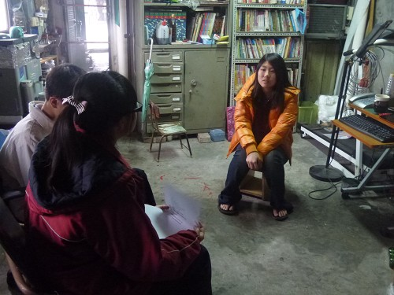
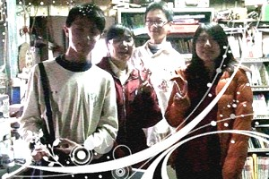

Interview > Children
In order to understand the life of Teacher Huang's children, we interviewed his youngest daughter Yan-hsuan Huang. We originally thought that she would be receiving a lot of special treatment and privileges as the youngest child, but it turned out that their family was very harmonious. Let us explore the surprises we encountered during the interview!

Yan-hsuan Huang graduated from Hsien-hsi Junior High School. She had a very close relationship with Teacher Huang, and often bickered with her father. They won’t hide anything in their speech.
(1) Do you support the work in cultural arts carried out by your father's family?
Yes, because folk traditions must be preserved and passed on. Although it is just an old skill, I think we should let everyone know the meaning behind its existence.
(2) Are you going to help propagate this art tradition?
My thinking is not that fast, so I tend to follow instructions and rarely have my own opinions. My hands weren't that nimble, so I can't really make things that I specifically want, or that I'll ask my older sister or brother to make them for me.
(3) Do you have future plans?
I will just take it one step at a time.
(4) Would you help your father in his career in folk art and culture? How?
My father often goes up the mountains to teach students there. We will tag along to help with the teaching, but we're actually learners ourselves.
(5) Did you ever find folk art annoying? Why?
It would feel quite annoying if you have other things that you wanted to do, because making dough figurines need a lot of work in cutting and assembling the pieces. The same goes for shadow puppetry. For example, you would make a hundred controllable levers today, but you can't just assemble them together. Making puppets also require a lot of work. I used to hate it when I was younger, but I no longer think like this now.
(6) Is there anything else you contributed to the community in addition to education?
Education is not entirely teaching. It also included learning aspects. Community reconstruction and communicating between groups of people also involve some degrees of learning.
(7) If you can, would you choose to learn from your father or someone who's more professional?
I would choose to learn from my father. My uncle makes very intricate things, but not my dad. His works are closer to children's toys, and so they're easier to learn from.
(8) Do you have any future expectations for yourself?
Actually, not really. I just hope I can keep studying and memorize English vocabulary better because I am not really good at English.
(9) Does your father expect you to pursue a career in folk arts or community reconstruction?
Actually, my fater would not really ask us to inherit his line of work. He respects our decision.
(10) What were your feelings along this line? Did you learn anything? Were there any special influences?
I thought kneading dough figurines was quite interesting when I was younger. Then I felt ok about it during primary school. My dad did not force me to learn the craft during junior high, and again I felt alright about it when I was in senior high.
 |
←After the interview, it also became a very important segment in our memories. |
(The text and pictures on these pages were based on interview transcriptions, photographs and writing taken by the project team)

|